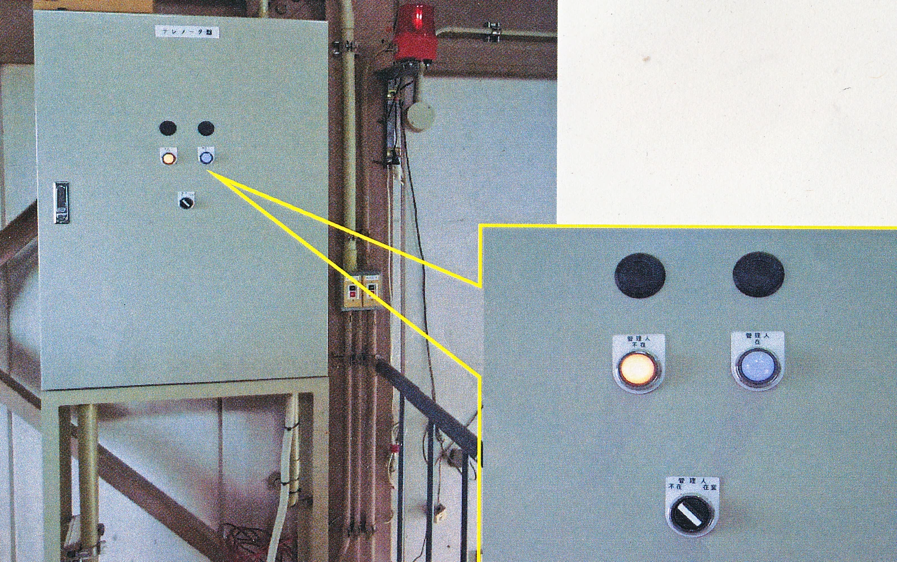
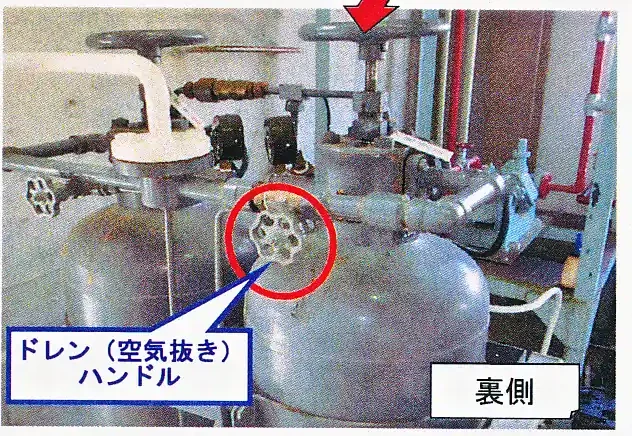
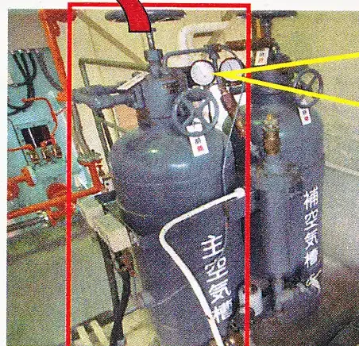
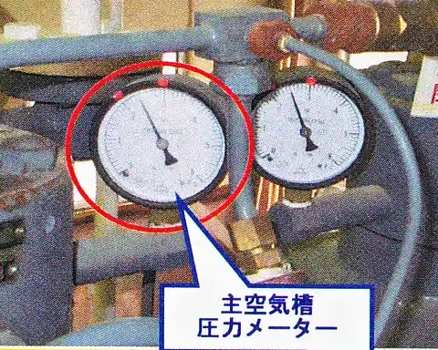

【1/6】電気系統（1～6）

～テレメーターの「管理人『在』・『不在』」の切替え～
●排水機場の運転状況や水位等を遠隔で監視するシステムが、河川水路課及び下水道施設管理課にあり、それぞれの課の画面上に表示されています。「テレメーター」は、そのシステムに対して、その機場の運転状況や水位等の情報を送信する装置となっています。
【入場時に行っていただくこと “管理人『在』” 】
①「管理人」のスイッチを右に回し、「在室」に合わせる。
②スイッチの上の「管理人 不在」のランプが消灯し、「管理人 在」のランプが点灯したことを確認する。
③確認後、点検等作業を開始してください。
【2/6】モーター掛補機 燃料・圧縮機（7～15）



②主空気槽の裏側にある空気抜き（ドレン）のハンドルを左に回し、強制的に主空気槽内の空気を一定以下（空気槽圧力2.1以下）まで抜く。
③主空気槽の圧力メーターが「2.1」以下になると、空気圧縮機が自動で運転を始め、空気圧槽内へ空気が送られる。（運転開始後、ドレンを右に回して完全に閉めること）
【3/6】エンジン・減速機（16～25）
画像エリア：オイルゲージ・潤滑ポンプ
【4/6】運転計測（26～31）
画像エリア：エンジン回転計・圧力計
【5/6】建物・除塵（32～40）
画像エリア：除塵機・照明スイッチ盤
【6/6】検針・最終確認（41～48）
画像エリア：メーター類（電力・水道）
～テレメーターの「管理人『在』・『不在』」の切替え～
【退出時に行っていただくこと “管理人『不在』” 】
①「管理人」のスイッチを左に回し、「不在」に合わせる。
②スイッチの上の「管理人 在」のランプが消灯し、「管理人 不在」のランプが点灯したことを確認する。
③確認後、照明の消灯と建屋・フェンスの施錠をし、退出してください。